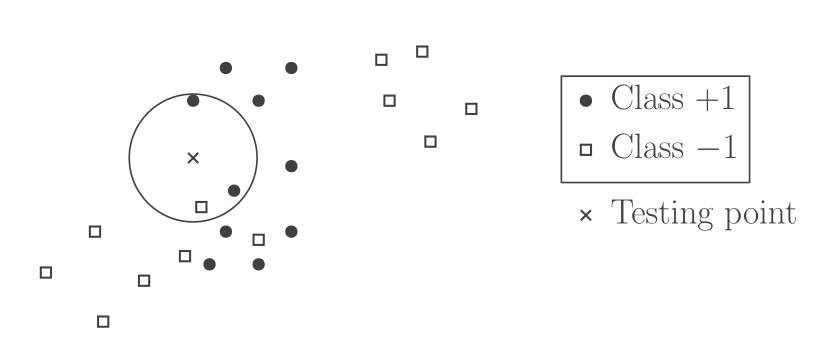
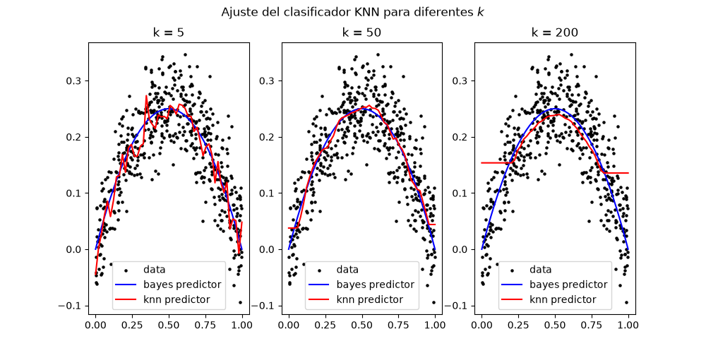
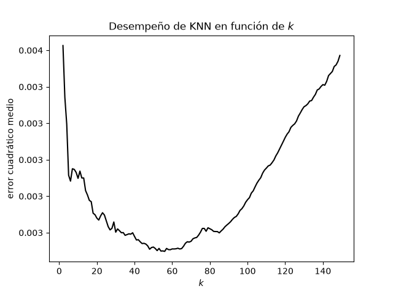

MAT281 - Semestre Primavera 2026
El curso busca desarrollar herramientas para la modelación matemática de problemas de ingeniería. En particular, se estudiarán problemas del análisis de datos, así como herramientas computacionales con las que estos se resuelven.
Existen múltiples lenguajes/librerías/plataformas en las cuales se implementan los algoritmos de análisis y aprendizaje que veremos en este curso:
pytorch (python)tensorflow (python)scikit-learn (python)SciML (julia)RFabric / Azure ML / Excel (Microsoft)Para intenciones pedagógicas, no se utilizará ninguna de estas librerías especializadas. Ya que mucha atención a los detalles de cada paquete puede distraer de la idea nuclear de los algoritmos.
Se preferirá un repositorio de python construido dedicadamente para hacer legibles los algoritmos, sacrificando algo de rendimiento que no necesitamos aún.
Problema de Aprendizaje Supervisado
Dada una colección finita de observaciones \(\{ (x_i, y_i) \}_{i=1}^n \subseteq \mathcal{X} \times \mathcal{Y}\) y un nuevo \(x \in \mathcal{X}\), predecir su correspondiente \(y \in \mathcal{Y}\).
Aquí, es común que a los \(x_i\) se les llame entradas / características y a los \(y_i\) se es llame salidas / etiquetas.
Nota
Obsérvese lo muy poco matemático que es este problema en su forma original.
Normalmente tomaremos \(\mathcal{X} = \mathbb{R}^d\) con \(d\) grande (pensar \(10^6\)), e \(\mathcal{Y} = \mathbb{R}\) o \(\{ 0, 1 \}\) o \(\{ 1, \dots, k \}\).
La forma más común de formular matemáticamente este problema es probabilista. Es decir, se asume que los datos \(\{ (x_i, y_i) \}_{i=1}^n\) son realizaciones de una misma variable aleatoria (es decir, son i.i.d.) y que su distribución es la misma en datos de entrenamiento y validación.
Lo que haremos será entonces resolver problemas del tipo \[ \min_f\; \mathbb{E}[l(y, f(x))] . \qquad(1)\]
Definición: Algoritmo de aprendizaje
Dados los elementos de este problema bien definidos, un algoritmo de aprendizaje es una función que dado el conjunto de datos \(\{ (x_i, y_i) \}_{i=1}^n\), entrega la función resultante \(f\) que resuelve Ecuación 1.
En análisis de datos, es importante distinguir:
El proceso de aplicar un método de aprendizaje supervisado también se debuguea más allá de la programación misma. Se debe escoger un buen modelo entre varias opciones, fijar hiperparámetros correctamente y saber identificar causas de lo que podría ser un mal ajuste.
Es valioso saber cuándo vale la pena utilizar cada método y por qué podría estar no dando los resultados esperados.
Cuando la correspondencia entrada / salida no es determinista pero se busca un predictor \(f\) que sí lo es, existen límites a lo que es posible lograr, aún con recursos computacionales infinitos. Estudiaremos estos antes de introducir detalles de implementación.
Sea \(p(x, y)\) la distribución de datos en \(\mathcal{X} \times \mathcal{Y}\) con distribución marginal \(p(x)\) en \(\mathcal{X}\).
Consideremos una función \(l: \mathcal{Y} \times \mathcal{Y} \to \mathbb{R}\) en que \(l(y, z)\) es el costo de predecir \(z\) cuando la respuesta correcta es \(y\). Algunos ejemplos son:
Dada la función de pérdida \(l\) y la distribución \(p\), podemos definir:
Definición: Riesgo esperado
Dada una función de predicción \(f: \mathcal{X} \to \mathcal{Y}\), una función de pérdida \(l : \mathcal{Y} \times \mathcal{Y} \to \mathbb{R}\) y una distribución de probabilidad \(p\) sobre \(\mathcal{X} \times \mathcal{Y}\), el riesgo esperado de \(f\) se define por \[ \mathcal{R}(f) = \mathbb{E} \left[ l(y, f(x)) \right] = \int_{\mathcal{X} \times \mathcal{Y}} l(y, f(x)) \; \mathrm{d} p(x, y). \] A veces, esto se denota por \(\mathcal{R}_{p}(f)\).
Cuando se cuenta con una colección de datos, es posible estimar el riesgo esperado mediante promedios:
Definición: Riesgo empírico
Dada una función de predicción \(f: \mathcal{X} \to \mathcal{Y}\), una función de pérdida \(l: \mathcal{Y} \times \mathcal{Y} \to \mathbb{R}\) y datos \(\{ (x_i, y_i) \}_{i=1}^n\), el riesgo empírico de \(f\) se define por \[ \hat{\mathcal{R}}(f) = \frac{1}{n} \sum_{i=1}^n l(y_i, f(x_i)). \]
Ejercicio
Describa el riesgo esperado para los problemas de clasificación binaria, multicategoría y regresión con sus respectivas pérdidas asociadas.
Utilizando ley de esperanza total, el riesgo esperado se puede escribir como \[ \mathcal{R}(f) = \int_{\mathcal{X}} r(f(x') | x') \; \mathrm{d}p(x'), \] en que \[ r(z | x' ) = \mathbb{E}[l(y, z) | x = x']. \] Esto sugiere escoger \(f(x')\) de manera óptima para cada \(x'\) fijo.
Proposición: Predictor de Bayes
El riesgo esperado se minimiza en un predictor \(f_*: \mathcal{X} \to \mathcal{Y}\) conocido como predictor de Bayes, que satisface: \[ \begin{align*} \forall x' \in \mathcal{X} : f_*(x') &\in \mathop{\mathrm{argmin}}_{z \in \mathcal{Y}} \mathbb{E}[l(y, z) | x=x'] \\ &= \mathop{\mathrm{argmin}}_{z \in \mathcal{Y}} r(z |x'). \end{align*} \] El riesgo de Bayes es el valor mínimo y se define por \[ \mathcal{R}^* = \mathbb{E}_{x' \sim p} \left[ \inf_{z \in \mathcal{Y}} r(z | x') \right]. \] Podemos definir también el riesgo marginal de un predictor \(f\) como \[ \mathcal{R}(f) - \mathcal{R}^* \geq 0. \]
Dada \(f\), tenemos \[ \begin{align*} \mathcal{R}(f) - \mathcal{R}^* &= \mathcal{R}(f) - \mathcal{R}(f_*) \\ &= \int_{\mathcal{X}} \left[ r(f(x') | x') - \min_{z \in \mathcal{Y}} r(z | x') \right] \; \mathrm{d}p(x') \\ &\geq 0. \end{align*} \]
Si bien el predictor de Bayes es el óptimo teórico y pareciera trivializar el problema de aprendizaje, en la práctica nunca se tiene acceso a la distribución \(p\), sino que se debe trabajar exclusivamente a partir de los datos \((x_i, y_i)\), donde obtener el predictor de Bayes para un \(x'\) no observado no es posible.
Los algoritmos se clasifican en dos ideas principales:
Hacemos a continuación un resumen de ambas clases.
Estos son algoritmos que buscan aproximar directamente el predictor de Bayes \(f_*(x') = \mathbb{E}[y | x = x']\) (o \(f_*(x') = \mathop{\mathrm{argmax}}_{z \in \mathcal{Y}} \mathbb{P}[y = z | x = x']\) en el caso binario) desde los datos empíricos. Esto suele requerir algún tipo de promedio local al encontrar datos que no tienen etiqueta, pero cercanos a datos etiquetados.
Por ejemplo, tómese el clasificador de los \(k\) vecinos más cercanos (KNN). En que \(\mathcal{Y} = \{ \pm 1 \}\) y dadas las observaciones \(((x_i, y_i))_{i=1}^{n}\) y un nuevo \(x^{\text{test}}\), este se clasifica por voto mayoritario entre sus \(k\) vecinos más cercanos.

ejemplo de clasificador de vecinos más cercanos
| Ventajas | Desventajas |
|---|---|
| No hay entrenamiento | La inferencia es costosa |
| Implementación sencilla | Maldición de la dimensionalidad |
| En dimensión baja puede tener buen desempeño | Depende de la función distancia que se escoja |
| El valor \(k\) es un hiperparámetro a elegir |
Aquí, la estrategia es diferente. Se considera una familia parametrizada de funciones de predicción (modelos): \[ f_{\theta}: \mathcal{X} \to \mathcal{Y}, \qquad (\theta \in \Theta) \] (Aquí \(\Theta\) es subconjunto de un e.v.)
Se busca entonces minimizar el riesgo empírico con respecto a \(\theta\): \[ \hat{\mathcal{R}}(f_\theta) = \frac{1}{n} \sum_{i=1}^n l(y_i, f_\theta(x_i)). \] De aquí, se obtiene un estimador \(\hat{\theta} = \mathop{\mathrm{argmin}}_{\theta \in \Theta} \hat{\mathcal{R}}(f_\theta)\) y una función de predicción \(f_{ \hat{\theta} }\).
Podemos tomar \(l(y, z) = (y - z)^2\) y \[ f_{\theta}(x) = \theta^{\top} \varphi(x) \] en que \(\varphi: \mathcal{X} \to \mathbb{R}^d\) es una función preestablecida (función de características). Esto define el riesgo empírico: \[ \frac{1}{n} \sum_{i=1}^n (y_i - \theta^{\top}\varphi(x_i))^2, \] cuya minimización es un problema convexo. Otros ejemplos de modelos incluyen redes neuronales u otras aproximaciones no lineales.
A continuación, hacemos una regresión de vecinos más cercanos donde estimamos la función \[ f(x) = x\cdot(1 - x) \] en base a datos \(x_i\) de distribución uniforme en \([0, 1]\) y datos \(y_i\) obtenidos con una perturbación gaussiana.
import numpy as np
from scipy.stats import uniform, norm
from matplotlib import pyplot as plt
from mla.knn import KNNRegressor
# Data de validación
f = lambda x : x * (1 - x)
x = np.linspace(0, 1, num=50)
y = f(x)
# Data de entrenamiento
x_train = uniform.rvs(0, 1, size = 500)
y_train = f(x_train) + norm.rvs(size=500, scale=0.05)
d = lambda x,y : np.abs(x - y)
# Crear y evaluar modelos para diferentes k
K = [5, 50, 200]
models = [KNNRegressor(k=k, distance_func=d) for k in K]
Y = []
for model in models:
model.fit(x_train, y_train)
Y.append(model.predict(x))
Figura 1: Simulación de KNN

Figura 2: Error cuadrático medio de KNN
Mirando la Figura 2, se nos ocurre que sería útil obtener (o más bien estimar) la curva descrita. En términos matemáticos, dado \(x \in \mathcal{X}\), buscamos una cota para \[ \mathbb{E}\left[ (\hat{f}(x) - f_*(x))^2 \; | \; x_1, \dots, x_n \right]. \] La dependencia de esta cota con respecto a \(k\) puede servir como heurística para elegir buenos valores en la práctica.
Nota
Pero no todo son resultados concretos! Este ejercicio también nos sirve para comprender el tipo de problemas en que KNN tiene sentido como predictor.
El algoritmo KNN es parte de un marco más general donde los predictores son una combinación lineal de las etiquetas observadas con pesos dependientes de la entrada: \[ \hat{f}(x) = \sum_{i=1}^n \hat{w}_i(x) y_i. \] En el caso de KNN, sea \(\Delta\) una distancia en \(\mathcal{X}\) y, dada una observación \(x \in \mathcal{X}\), ordenamos las entradas \(x_i\) de modo que \[ \Delta(x_{i_1(x)}, x) \leq \Delta(x_{i_2(x)}, x) \leq \dots \leq \Delta(x_{i_n(x)}, x). \] El algoritmo KNN define entonces \[ \hat{w}_i(x) = \begin{cases} \frac{1}{k}, & i \in \{ i_1(x), \dots, i_k(x) \}, \\ 0, & i \notin \{ i_1(x), \dots, i_k(x) \}. \end{cases} \]
Para simplificar, hacemos dos hipótesis que pueden ser debilitadas considerablemente
Bajo las hipótesis anteriores, podemos obtener la siguiente cota para el error cuadrático medio: \[ \mathbb{E}[ (\hat{f}(x) - f_*(x))^2 \;|\; x_1, \dots, x_n] \leq B^2 \sum_{i=1}^n \hat{w}_i(x) \Delta(x_i, x)^2 + \sigma^2 \sum_{i=1}^n \hat{w}_i(x)^2. \] El primer término representa el sesgo del estimador, mientras que el segundo representa su varianza.
Para descomponer el MSE entre sesgo y varianza, se utiliza la ley de varianza total (ver Ecuación 2) \[ \begin{align*} & \mathbb{E}\left[ (\hat{f}(x) - f_*(x))^2 \;|\; x_1, \dots, x_n \right] \\ =& \left( \mathbb{E}[\hat{f}(x) \;|\; x_1, \dots, x_n] - f_*(x) \right)^2 + \text{var}[\hat{f}(x) \;|\; x_1, \dots, x_n] \\ =& \mathbb{E}[\hat{f}(x) - f_*(x) \;|\; x_1, \dots, x_n]^2 + \sum_{i=1}^n \hat{w}_i(x)^2 \mathbb{E}[(y_i - \mathbb{E}[y | x_i])^2 \;|\; x_i] \end{align*} \] El término bajo la primera esperanza se puede escribir como sigue \[ \begin{align*} &\hat{f}(x) - f_*(x) \\ =& \sum_{i=1}^n y_i \hat{w}_i(x) - \mathbb{E}[y \;|\; x] \\ =& \sum_{i=1}^n \hat{w}_i(x) \left[ y_i - \mathbb{E}[y \;|\; x_i] \right] + \sum_{i=1}^n \hat{w}_i(x) \left[ \mathbb{E}[y \;|\; x_i] - \mathbb{E}[y \;|\; x] \right] \\ =& \sum_{i=1}^n \hat{w}_i(x) \left[ y_i - \mathbb{E}[y \;|\; x_i] \right] + \sum_{i=1}^n \hat{w}_i(x) \left[ f_*(x_i) - f_*(x) \right]. \end{align*} \] Nótese que el primer término tiene esperanza nula al condicionar a los \(x_i\), mientras que el segundo término es determinista. Obtenemos entonces una expresión que podemos acotar mediante las hipótesis: \[ \begin{align*} & \mathbb{E}\left[ (\hat{f}(x) - f_*(x))^2 \;|\; x_1, \dots, x_n \right] \\ =& \left[ \sum_{i=1}^n \hat{w}_i(x) \left[ f_*(x_i) - f_*(x) \right] \right]^2 + \sum_{i=1}^n \hat{w}_i(x)^2 \mathbb{E}[(y_i - \mathbb{E}[y | x_i])^2 \;|\; x_i] \\ \leq & \left[ \sum_{i=1}^n \hat{w}_i(x) B \Delta(x_i, x) \right]^2 + \sigma^2 \sum_{i=1}^n \hat{w}_i(x)^2 \\ \leq & B^2 \sum_{i=1}^n \hat{w}_i(x) \Delta(x_i, x)^2 + \sigma^2 \sum_{i=1}^n \hat{w}_i(x)^2. \\ \end{align*} \] La última desigualdad se tiene por desigualdad de Jensen, por convexidad de la función \(x \mapsto x^2\). Esto es lo que se buscaba obtener.
Reemplazando los \(\hat{w}_i(x)\) para el algoritmo de KNN, se obtiene la cota \[ \begin{align*} \mathbb{E}[ (\hat{f}(x) - f_*(x))^2 \;|\; x_1, \dots, x_n] &\leq \sigma^2 \sum_{i=1}^n \hat{w}_i(x)^2 + B^2 \sum_{i=1}^n \hat{w}_i(x) \Delta(x_i, x)^2 \\ &= \sigma^2 k \cdot \left( \frac{1}{k^2} \right) + B^2 \frac{1}{k}\sum_{j=1}^{k} \Delta(x_{i_j(x)}, x)^2 \\ &= \frac{\sigma^2}{k} + \frac{B^2}{k} \sum_{j=1}^{k} \Delta(x_{i_j(x)}, x)^2 . \end{align*} \] El último término corresponde al promedio empírico de los cuadrados de las distancias entre \(x\) y sus \(k\) vecinos más cercanos. Buscamos ahora acotar esto en términos de los datos del problema.
Nota
Este es prácticamente un problema de matemática pura.
Lema 1: Distancia esperada al vecino más cercano
Considere \(n+1\) puntos \(x_1, \dots, x_{n+1}\) obtenidos de una distribución de probabilidad con soporte compacto \(\mathcal{X} \subseteq \mathbb{R}^d\). Entonces, el valor esperado del cuadrado de la distancia \(l_{\infty}\) entre \(x_{n+1}\) y su vecino más cercano está acotada por \[ 4 \frac{\text{diam}(\mathcal{X})^2}{n^{ \frac{2}{d} }}. \]
Lema 2: Distancia esperada al \(k\)-ésimo vecino más cercano
Bajo las hipótesis anteriores, el valor esperado del cuadrado de la distancia \(l_{\infty}\) entre \(x_{n+1}\) y su \(k\)-ésimo vecino más cercano está acotada por \[ 8 \text{diam}(\mathcal{X})^2 \left( \frac{2k}{n} \right)^{ \frac{2}{d} }. \]
\[ \mathbb{E}[ (\hat{f}(x) - f_*(x))^2 \;|\; x_1, \dots, x_n] \leq \frac{\sigma^2}{k} + 8B^2 \text{diam}(\mathcal{X})^2 \left( \frac{2k}{n} \right)^{ \frac{2}{d}}. \]
La regresión lineal, pese a sonar simple, es una herramienta tremendamente poderosa, flexible y bien entendida por la teoría. La utilizaremos como un ejemplo insigne que captura muchos de los balances propios del aprendizaje automático moderno.
Volviendo al aprendizaje supervisado, supongamos que disponemos de observaciones \((x_i, y_i) \in \mathcal{X} \times \mathcal{Y}, (i=1, \dots, n)\). Dado un nuevo \(x \in \mathcal{X}\), buscamos predecir su correspondiente \(y \in \mathcal{Y}\) con una función \(f\) tal que \(y \approx f(x)\).
Para regresión, tomamos \(\mathcal{Y} = \mathbb{R}\) y la función de pérdida \(l(y, z) = (y - z)^2\). Ya sabemos que el predictor óptimo es \(f_*(x) = \mathbb{E}[y | x]\), pero no podemos evaluar esto de manera exacta solo con datos.
La regresión de mínimos cuadrados consiste en la categoría (nueva en este curso) de métodos de minimización de riesgo empírico. Dada una familia parametrizada de funciones \(f_\theta: \mathcal{X} \to \mathcal{Y} = \mathbb{R}\), en que \(\theta \in \Theta\) es un parámetro, se minimiza la cantidad \[ \frac{1}{n}\sum_{i=1}^n (y_i - f_\theta(x_i))^2. \] Con esto, se obtiene un minimizador \(\hat{\theta}\) (aleatorio!!) y el predictor óptimo \(f_{ \hat{\theta}}\).
Tomemos en esta clase el caso en que la función \((x, \theta) \mapsto f_\theta(x)\) es lineal en \(\theta\) y por lo tanto \(\Theta = \mathbb{R}^d\) para algún \(d\).
Nota
Esto no significa ser lineal en \(x\).
Tenemos entonces la forma \[ f_\theta(x) = \sum_{i=1}^{d} \alpha_i(x) \theta_i. \] Esto requiere \(d\) funciones ya dadas \(\alpha_i : \mathcal{X} \to \mathbb{R}\) las cuales podemos agrupar en un vector \[ \varphi(x) = (\alpha_1(x), \dots, \alpha_d(x)), \] de donde \[ f_\theta(x) = \varphi(x)^{\top}\theta. \] Se minimiza entonces el riesgo empírico \[ \hat{\mathcal{R}} = \frac{1}{n} \sum_{i=1}^n (y_i - \varphi(x_i)^{\top} \theta)^2. \]
Ejemplo
Si los \(\alpha_i\) son monomios, tenemos \(\varphi(x) = (1, x, x^2, x^3, \dots, x^d)\), de modo que los predictores \(f_\theta(x)\) son polinomios de grado \(\leq d\).
Si se define \(y = (y_1, \dots, y_n)\) como el vector de observaciones y se agrupan los \((\varphi(x_i))_{i=1}^{n}\) como filas de una matriz \(\Phi \in \mathbb{R}^{n \times d}\), el riesgo empírico se puede escribir como \[ \hat{\mathcal{R}}(\theta) = \frac{1}{n} \left\lVert y - \Phi \theta\right\rVert_2^2. \qquad(3)\]
Asumamos que \(\Phi\) tiene rango completo con \(n \geq d\) (suficientes observaciones), esto implica que \(\Phi^{\top}\Phi \in \mathbb{R}^{d \times d}\) es invertible.
Definición: Estimador OLS
El estimador de mínimos cuadrados ordinario se define como el único minimizador de Ecuación 3.
Pruebe que el minimizador \(\hat{\theta}\) se calcula como \[ \hat{\theta} = (\Phi^{\top}\Phi)^{-1} \Phi^{\top}y. \]
Ya que la optimización es sin restricciones, el minimizador está dado por la condición \(\nabla \mathcal{R}( \hat{\theta}) = 0\). Expandiendo el cuadrado, tenemos \[ \begin{align*} \hat{\mathcal{R}}( \theta) &= \frac{1}{n} \left( \left\lVert y\right\rVert_2^2 - 2 \theta^{\top} \Phi^{\top} y + \theta^{\top} \Phi^{\top} \Phi \theta \right), \\ \nabla \hat{\mathcal{R}}( \theta) &= \frac{2}{n} \left( \Phi^{\top} \Phi \theta - \Phi^{\top} y \right). \end{align*} \] Igualando a cero y usando la invertibilidad, \[ \begin{align*} \Phi^{\top} \Phi \hat{\theta} &= \Phi^{\top} y \\ \hat{\theta} &= (\Phi^{\top} \Phi)^{-1} \Phi^{\top} y. \end{align*} \]
Comentario
Se aconseja evitar funciones como np.linalg.inv(A)
Hemos discutido cómo obtener el estimador OLS \(\hat{\theta}\), pero aún no sabemos qué tan bueno es realmente, o qué factores influyen en su desempeño. Esto estudiaremos ahora.
Hay dos escenarios clásicos para este análisis
Tomamos diseño fijo y suponemos \(\hat{\Sigma} = \frac{1}{n}\Phi^{\top}\Phi\) invertible. También asumimos lo siguiente sobre la distribución:
Sea \(\mathcal{R}^*\) el valor mínimo de \(\mathcal{R}(\theta)\) sobre \(\theta \in \mathbb{R}^d\). Entones, tenemos lo siguiente:
Para cada \(\theta \in \mathbb{R}^d\), tenemos \(\mathcal{R}^* = \sigma^2\) y \[ \mathcal{R}(\theta) - \mathcal{R}^* = \left\lVert\theta - \theta_*\right\rVert_{ \hat{\Sigma}}^2, \] en que \(\hat{\Sigma} = \frac{1}{n} \Phi^{\top}\Phi\) y \(\left\lVert\theta\right\rVert_{ \hat{\Sigma}}^2 = \theta^{\top} \hat{\Sigma} \theta\). Si ahora \(\hat{\theta}\) es aleatorio, entonces \[ \mathbb{E}[\mathcal{R}( \hat{\theta})] - \mathcal{R}^* = \left\lVert\mathbb{E}[ \hat{\theta}] - \theta_*\right\rVert_{ \hat{\Sigma}}^{2} + \mathbb{E} \left[ \left\lVert \hat{\theta} - \mathbb{E}[ \hat{\theta}] \right\rVert_{ \hat{\Sigma}}^{2} \right]. \]
Ya que \(y = \Phi \theta_* + \varepsilon\), tenemos \[ \begin{align*} \mathcal{R}(\theta) &= \mathbb{E}_y \left[ \frac{1}{n} \left\lVert y - \Phi \theta\right\rVert_2^2 \right] \\ &= \mathbb{E}_\varepsilon\left[ \frac{1}{n} \left\lVert \Phi(\theta_* - \theta) + \varepsilon\right\rVert_2^2 \right] \\ &= \frac{1}{n} \mathbb{E}_\varepsilon\left[ \left\lVert \Phi(\theta_* - \theta)\right\rVert_2^2 + \left\lVert\varepsilon\right\rVert_2^2 + 2 ( \Phi(\theta_* - \theta))^{\top} \varepsilon\right] \\ &= \sigma^2 + \frac{1}{n} (\theta_* - \theta)^{\top} \Phi^{\top} \Phi(\theta_* - \theta) \\ &= \sigma^2 + \left\lVert\theta_* -\theta\right\rVert_{ \hat{\Sigma}}^2. \end{align*} \] Esta expresión se minimiza en \(\theta_*\) con valor mínimo \(\mathcal{R}^* = \sigma^2\) y se tiene el riesgo marginal pedido.
Si ahora se supone \(\hat{\theta}\) aleatorio, se puede emplear lo anterior junto con la ley de varianza total para vectores: \[ \mathbb{E} \left[ \left\lVert z - a\right\rVert_M^2 \right] = \left\lVert \mathbb{E}[z] - a \right\rVert_M^2 + \mathbb{E} \left[ \left\lVert z - \mathbb{E}[z]\right\rVert_M^2 \right] \] para concluir.
La descomposición anterior nos dice que para cualquier estimador \(\hat{\theta}\) (como OLS, pero no solo ese!), nos basta conocer su esperanza y varianza para deducir su riesgo marginal asociado.
Estudiaremos entonces las propiedades del estimador \[ \hat{\theta} = (\Phi^{\top}\Phi)^{-1} \Phi^{\top} y = \hat{\Sigma}^{-1} \left( \frac{1}{n}\Phi^{\top}y \right) \] con respecto al modelo \[ y = \Phi\theta_* + \varepsilon. \]
Juntando lo anterior, obtenemos lo siguiente
El riesgo marginal del estimador OLS está dado por \[ \mathbb{E}[\mathcal{R}( \hat{\theta})] - \mathcal{R}^* = \frac{\sigma^2d}{n}. \]
Usando Ecuación 4, \[ \begin{align*} \mathbb{E}[\mathcal{R}( \hat{\theta})] - \mathcal{R}^* &= \mathbb{E} \left[ \left\lVert (\Phi^{\top}\Phi)^{-1} \Phi^{\top} \varepsilon\right\rVert_{ \hat{\Sigma}}^2 \right] \\ &= \frac{1}{n} \mathbb{E} \left[ \varepsilon^{\top} \Phi (\Phi^{\top}\Phi)^{-1} \Phi^{\top} \Phi (\Phi^{\top}\Phi)^{-1} \Phi^{\top} \varepsilon\right] \\ &= \frac{1}{n} \mathbb{E} \left[ \varepsilon^{\top} \underbrace{ \Phi (\Phi^{\top}\Phi)^{-1} \Phi^{\top} }_{=\Pi} \varepsilon\right] \\ &= \frac{1}{n} \mathbb{E} [\varepsilon^{\top} \Pi \varepsilon] \\ &= \frac{1}{n} \mathbb{E}[ \text{tr} (\Pi \varepsilon\varepsilon^{\top})] \\ &= \frac{\sigma^2}{n} \text{tr}(\Pi) = \frac{\sigma^2d}{n}. \end{align*} \]
Nota
Se aprecia maldición de la dimensionalidad.